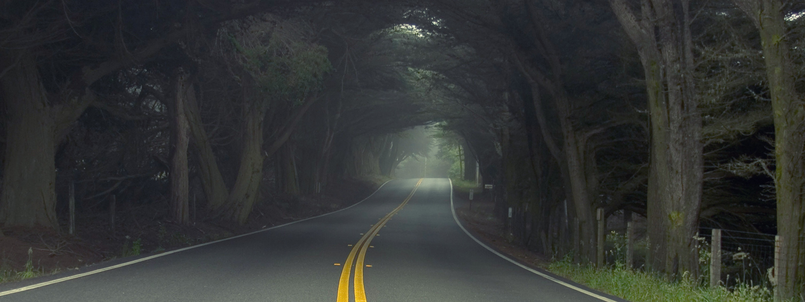
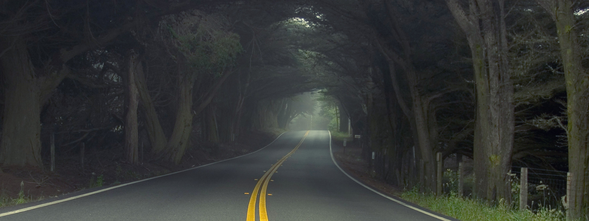

Suzuki
Suzuki (スズキ株式会社, Suzuki Kabushikigaisha) is een Japanse multinational die vooral bekend is als fabrikant van auto's en motorfietsen. Het hoofdkantoor staat in Hamamatsu, Japan.
Historie Aanvankelijk maakte het bedrijf verschillende producten, waaronder weefgetouwen en wapens. In 1937 produceerde men een kleine auto, gebaseerd op de Austin Seven. Eigenaren van het bedrijf waren Michio Suzuki, die het in 1909 had opgericht, en zijn schoonzoon Shunzo Suzuki, die de familienaam naar Japanse traditie had overgenomen. In 2009 kocht Volkswagen AG een aandelenbelang van 20% in Suzuki voor 2,5 miljard dollar.[1] Suzuki kocht voor de helft van dat bedrag weer aandelen van Volkswagen.[1] De twee wilden samenwerken aan kleine brandstofzuinige auto's. Volkswagen kreeg verder een betere marktpositie in groeimarkten China en India en Suzuki kreeg toegang tot moderne autotechnologie tegen lage kosten.[1] In 2011 zette Suzuki al eenzijdig een punt achter de moeizame relatie door zijn belang van 1,5% in Volkswagen te verkopen.[2] In september 2015 kocht Suzuki de aandelen in handen van Volkswagen AG terug voor 3,8 miljard dollar.[2] In mei 2016 maakte Suzuki bekend dat het onjuiste testmethodes heeft gebruikt om de brandstofefficiëntie van zijn auto's te meten.[3] Het betreft hier 2,1 miljoen auto's die in Japan zijn verkocht. Op de aandelenbeurs in Tokio werd het nieuws slecht ontvangen en de koers van het aandeel daalde met meer dan 9%.[3]